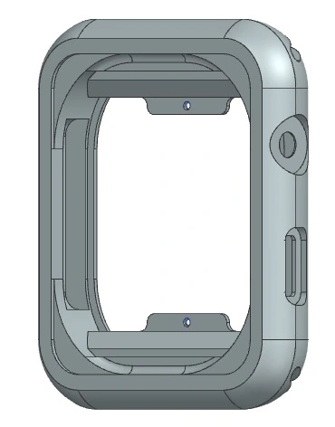

Design & manufacturing
Apple Watch production study
Connecting enclosure reverse engineering, drawings and production planning.
01
Overview
A two-person manufacturing study reconstructs a simplified smartwatch enclosure and proposes a production route from aluminium sheet to finished component.
The case connects geometry and functional requirements with process planning, tooling, machine selection, production capacity and cost estimation.

02
Requirements & constraints
Manufacturer information covers external surfaces; internal geometry was inferred from photographs. Dimensions and tolerances are study assumptions, not a complete manufacturer specification.
Small cavities, strap interfaces and the crown and button seats require careful tool selection. Very small tool diameters create a spindle-speed constraint.
The production scenario targets one million parts per year. Capacity and bottleneck calculations depend on the assumed operation times and utilization.
03
My contribution
I worked with Alessia Aguzzi on enclosure reconstruction and manufacturing planning. Together, we developed drawings, operation sheets, tooling choices and a production cost model.
04
Approach & decisions
External drawings and component photographs inform a hypothesized enclosure model. Functional interfaces are identified before dimensional and geometric tolerance assumptions are assigned.
The proposed material is Al 7005-T6. The process starts from a 3000 × 1500 × 10 mm sheet, divided into three 1500 × 1000 mm panels; the proposed panel layout contains 608 blanks.
The route separates internal cavity machining, blank separation, external machining and finishing. Tool geometries and operation parameters are selected to suit the features and aluminium machining.
The study compares equipment, calculates material-removal time, considers tool life through an assumed Taylor model and estimates energy and machine costs.
A production-capacity model identifies a bottleneck and distributes internal and external machining over production periods. The proposed surface-finishing step is vibratory tumbling.

05
Results & validation
The outputs are a simplified enclosure definition, a detailed proposed manufacturing sequence, tooling and equipment choices, operation sheets and a cost model.
The study discusses a target finish improvement from Ra 0.8 to Ra 0.4 through tumbling and sizes equipment for the annual production scenario. These are calculated or proposed study values, not measured factory results.

06
Limitations & next steps
This is an academic manufacturing proposal, not work commissioned by Apple or a reconstruction of its official production process.
Geometry, material, tolerances, machine prices and tool-life parameters contain assumptions. They need engineering review before use as manufacturing specifications.
The production and finishing estimates were not validated through machining trials or an operating line.
07
Resources
Further project material will be added to this case study.